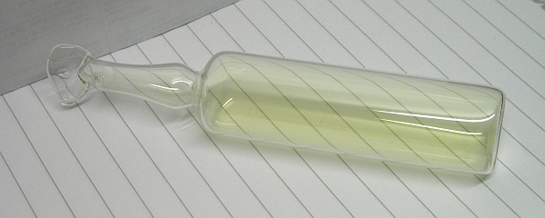

Chlorine is a yellow-green gas that can be used to kill bacteria in drinking water and swimming pools, to make cleaning products (e.g. bleach), and to make plastics like PVC.
Chlorine gas is toxic, it was even used in the First World War as a weapon. If it leaks from a factory it is dangerous and may kill many people.
 Although chlorine gas is toxic, chlorine has wide practical uses in everyday life
Test for chlorine (Edexcel): Damp blue litmus paper first turns red (i.e. as with other acids), and then white as it is bleached by chlorine gas.
Chlorine and health (OCR): Chlorinating drinking water kills microorganisms that cause fatal diseases such as typhoid and cholera.
However, some scientists believe chlorine in water may react with organic matter to form chemicals that may be linked to cancer: but evidence for this is disputed.
Electrolysis
Electrolysis is the use of electric current to decompose compounds.
For example, electrolysis decomposes water into hydrogen and oxygen. This process can used to produce breathable O2 from sea water (e.g. for use in submarines) and in emergency oxygen masks.
Chlorine can be produced by electrolysis of hydrochloric acid, and also by electrolysis of sea water.
Electrolysis of HCl with DC current
Electrolysis of brine (OCR): brine is a solution of salt in water. (Sea water is therefore similar to brine.) The reactants in the electrolysis of brine are NaCl and H2O; the products are Cl2, NaOH and H2.
These products are important to everyday life: for example, sodium hydroxide is used to manufacture paper, textiles and soaps; hydrogen can be used as a ‘clean fuel’.
These products can also be combined to make other useful products: hydrogen and chlorine make hydrogen chloride gas, which in solution is hydrochloric acid; chlorine and sodium hydroxide make bleach.
The electrolysis of brine is carried out on an industrial scale, which may have some negative consequences: huge amounts of non-renewable energy may be used for the process; until recently the technique used to separate Cl2 and NaOH in the process involved mercury, a toxic substance.
Salt (OCR)
Common salt (sodium chloride, NaCl) is a source of chlorine, is used to preserve meat and fish, and is often used to add flavour to food.
It is also used to de-ice roads in the winter: salty water has a lower freezing point than normal water.
It can be extracted from the sea in hot climates by evaporation, and from underground salt deposits by mining with large machines.
Open-air salt pans in Peru, used to ‘harvest’ salt by evaporation
Solution salt mining: this involves pumping water down into salty rock; the salt dissolves into brine. At the surface the brine is evaporated – the salt crystallises and can be separated further by filtering and centrifuging.
Subsidence of surface buildings: a negative effect of solution salt mining, caused by the large underground holes left behind by the mines.
Salt is essential to a healthy diet: small traces of it are found in many foods, e.g. cereals, cheese, bread, meat and fish. These foods usually provide us with all the salt we need.
But we also tend to add salt for flavour in cooking and at the table. The average UK person consumes about double the salt they need.
The Department of Health believes excess salt increases blood pressure, increasing the risk of stroke or heart disease. It recommends lowering salt intake. Food labels can help us regulate how much salt we eat.
Chemicals and health (OCR)
Some chemicals have been found to be harmful to humans even in small doses. They include pesticides like DDT, now banned because it is a persistent organic pollutant (POP).
POPs do not break down easily; they also tend to accumulate in animal fat and are therefore passed to humans in their food chain; they also travel over long distances in air and water.
Recent legal developments include the testing of new chemicals for human safety. But so many thousands of chemicals are created synthetically across the world, it is almost impossible to test them all.
PVC – benefits and risks: polyvinyl chloride is a useful plastic polymer; it is made of long chains of carbon, hydrogen and chlorine atoms.
PVC is a widely-used synthetic chemical product (in clothes, pipes, window frames). It can be easily shaped via heat into both flexible and rigid forms, it is cheap to produce, and it retains its shape once set.
PVC tubing is used the world over: it is almost impossible to imagine modern life without it
But synthetic products tend to present risks as well as benefits. PVC is often combined with plasticisers, which help it to be flexible for use in products like hospital tubing or toys.
Plasticisers may leach out of PVC products into saliva or blood. Children may chew on toys containing plasticisers; small amounts of plasticisers may mix with liquids intravenously fed to hospital patients.
There is mixed evidence as to the effects of plasticisers on humans. They have been shown to harm the reproductive systems of animals, but conclusive proof of their effect on humans has not been found.
Life Cycle Assessment (OCR)
Raw materials, energy and water are used to make the physical products of everyday life. LCA helps us understand how quickly we are using up non-renewable natural resources.
LCA is sometimes called a ‘cradle to grave’ analysis. If materials arrive at the ‘grave’ and are not recycled or biodegradable, we may not be using the Earth’s non-renewable resources as efficiently as we could:
Life cycle of a plastic bottle
Energy is used throughout the life cycle of a product: for making it, for using and maintaining it, and for disposing of it, whether in a landfill site or by recycling it.
Plastics are difficult to recycle; materials like glass can be reused quite easily. But if plastics are used well and for a long time (e.g. energy-efficient PVC windows) their life cycle is more positive than we might think.